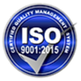
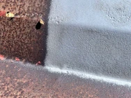
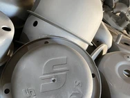
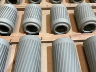
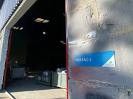
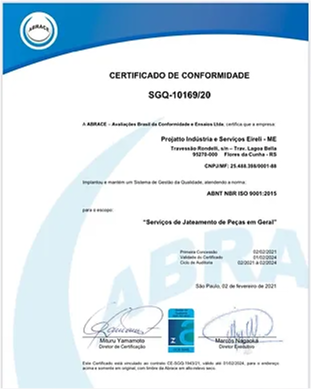

Como funciona o jateamento abrasivo?
Entenda o processo, os tipos de materiais utilizados e como o jateamento pode aumentar a durabilidade das superfícies.
Ler mais

Removemos ferrugem, tinta e qualquer tipo de resíduo com eficiência e precisão.
Utilizamos técnicas modernas de jateamento de granalha, garantindo superfícies limpas, preparadas e com excelente acabamento para pintura ou outros tratamentos.
.png)









A Projatto nasceu em Flores da Cunha/RS, em meio a um cenário industrial que crescia rapidamente na região. No início, tudo era simples: uma pequena estrutura, poucos equipamentos e uma grande vontade de fazer diferente no mercado de jateamento.
Com o tempo, a dedicação dos fundadores e o compromisso com a qualidade transformaram a empresa. Cada serviço realizado virou uma oportunidade de aprendizado, e cada cliente atendido ajudou a construir a reputação da Projatto como referência em limpeza e preparação de superfícies.
Foram anos de investimento em tecnologia, capacitação de profissionais e melhoria constante dos processos. A busca por excelência levou a empresa a adotar padrões rigorosos de qualidade e a conquistar a confiança de indústrias, oficinas e parceiros da região.
Hoje, localizada em Flores da Cunha/RS, a Projatto atua há mais de 10 anos no mercado, reunindo profissionais qualificados e experientes. Mais do que uma prestadora de serviços, a empresa se tornou sinônimo de confiança, precisão e acabamento de alto nível no setor de jateamento.
Gestão certificada pela ISO 9001.

Granalha de aço e microesfera.
O jateamento é um processo industrial utilizado para limpar, preparar ou dar acabamento a superfícies através do impacto de partículas abrasivas.
Superfície uniforme com excelente aderência.
Automotivo, metalúrgico e industrial.
Jato automático e manual.
Atendimento direto com o cliente.
Nosso atendimento é focado na proximidade, garantindo acompanhamento completo e soluções personalizadas.
Mais confiança e melhor qualidade no serviço.
Antes de iniciar o serviço, realizamos uma análise completa da superfície, identificando o tipo de material, nível de desgaste e impurezas presentes.
Em seguida, executamos a descontaminação, removendo óleos, graxas e resíduos que possam comprometer o resultado. Essa etapa garante melhor aderência, uniformidade e maior durabilidade do tratamento.
O jateamento é realizado com equipamentos e abrasivos adequados para cada tipo de superfície, removendo ferrugem, tinta e incrustações com precisão e segurança.
Durante todo o processo, controlamos pressão, granulometria e aplicação, garantindo um acabamento uniforme e o perfil ideal para pintura ou outros tratamentos.
Após a execução, realizamos uma inspeção detalhada para garantir que a superfície atenda aos padrões de qualidade exigidos.
Verificamos acabamento, limpeza e possíveis ajustes, assegurando um resultado final durável, seguro e pronto para aplicação ou entrega ao cliente.
Entenda o processo, os tipos de materiais utilizados e como o jateamento pode aumentar a durabilidade das superfícies.
Ler mais
Saiba identificar os sinais de desgaste e a importância da manutenção preventiva em estruturas metálicas.
Ler mais
Descubra como preparar corretamente a superfície pode garantir um acabamento mais resistente e durável.
Ler maisA Projatto está localizada em Flores da Cunha/RS, atendendo toda a região com serviços de jateamento industrial, automotivo e metalúrgico.
Flores da Cunha - RS
(54) 99999-9999
contato@projatto.com.br
Segunda à Sexta • 07:30 às 17:00